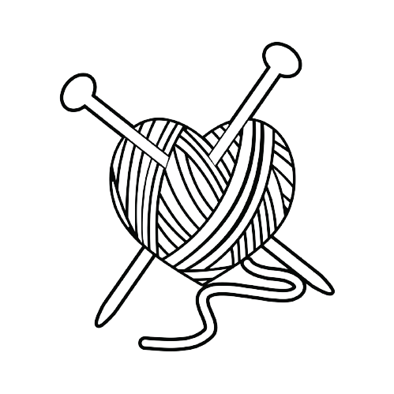
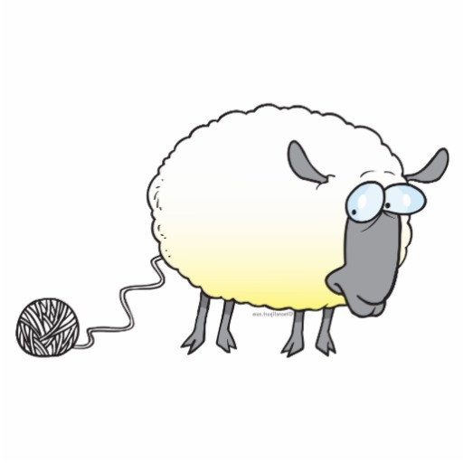

Tiffy's Knitting Calculator

How many stitches should I be knitting?
The pattern I am knitting calls for
stitches over 4 inches.
I am knitting at
stiches over my 4 inch swatch.
Your sizing will change
inches in the garment.
When the line in the pattern calls for
stiches,
(to keep my right size)
You should be knitting
stitches.